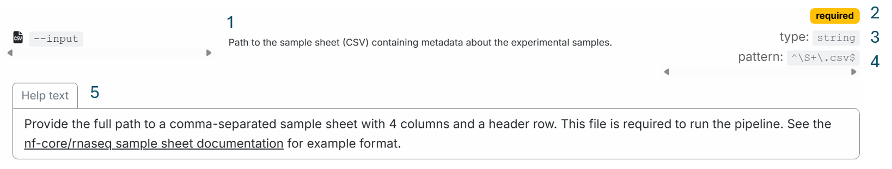
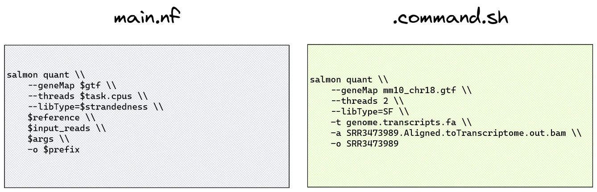

2.1 nf-core pipeline parameters
Objectives
- Learn how to discover available nf-core pipeline parameters and their default values
- Use the
nextflow logcommand to view task commands executed by a process with their parameters expanded - Investigate a run warning message and address the issue through parameter application
- Consider the pros and cons of applying parameters on the command line, within a run script, or via a parameters file
- Understand nf-core
pipeline_infofiles and how they support reproducible methods
2.1.1 Reproducibility and portability
Reproducibility: being able to run the same bioinformatics data analysis again and get the same results
Portability: being able to run that bioinformatics analysis on different computers or systems without needing major changes
These are two foundational concepts in rigorous science, and Nextflow and nf-core help support them by providing standardised, reusable workflows that can be run consistently across different environments.
In this section we will focus on customising nf-core workflows with parameters. Once we begin changing the defaults within a pipeline, reproduciblity may be compromised if we do not maintain adequate records of the customisations we have made.
While we are working on customising paramters, we will also discuss reproducibility in data analysis and how nf-core pipeline outputs can be used to assist in adequately reporting methods for reproducible science.
2.1.2 Discovering available parameters
Understanding what parameters are available to a workflow provides the scope in which you can customise what is run. In the next section, we will focus on how the workflow is run through the use of configuration files.
When working with a new pipeline or software tool, a crucial step to customising it to your experiment data is reviewing the available parameters, their meaning, and what defaults may be in place. There are two main methods to discover nf-core pipeline parameters:
- nf-core pipeline parameters user guide, found at
nf-co.re/<workflow>/<version>/parameters - nf-core pipeline
helpcommand, viewed bynextflow run <pipeline> --help
Tip
At the Nextflow run command, you can either specify the pipeline main.nf file, or the directory containing the main.nf file.
For example, each of these commands are valid:
The parameter descriptions provided by the online user guide or command-line help menu are the same, however the online user guide provides more comprehensive information that may be crucial to your correct use of the parameter.
Exercise 2.1.2  3 mins
3 mins
Compare the information about the nf-core/rnaseq --input parameter that is provided by the pipeline parameters user guide and the pipeline help menu.
Which would you find most useful when setting up a run of this pipeline for your own data?
Solution
The nf-core/rnaseq parameters user guide provides five pieces of information about the parameter:
- Parameter description
- That the parameter is required
- Parameter type (string)
- Parameter pattern (includes no whitespace, ends in '.csv')
- Extended help text with a format description and link to example

In contrast, the command-line help menu provides only two of these five details - the parameter description and type.
--input [string] Path to the sample sheet (CSV) containing metadata about the experimental samples.
Reviewing the complete parameter user guide is recommended when setting up and customising your run, particularly if you are new to the pipeline. The help menu can be a handy quick check for available parameters but does not provide as much detail as the user guide.
2.1.3 Checking execution at the process level
When we apply a pipeline parameter to a run, Nextflow provides that parameter and its provided argument to the appropriate module. The module code adds that parameter to the process command, pairing it with any other user-supplied, hard-coded, or default parts of the command.
There are a lot of moving parts within an nf-core codebase, so the best way to understand what command is being run by a process is to view the command that was actually executed, with all parameters expanded, or 'interpolated'.
If you have never run the pipeline before, you won't have the benefit of cached task details in the work directory to view the task command, so you would need to manually inspect the code to figure out the full command. However, since best practice suggests we always run the nf-core test profile before getting started with our own data, this should never be a problem 
Let's consider the example of quantification with the tool Salmon, part of the default pipeline run we executed in Lesson 1.4.3. If you were to view the Nextflow code for this process (SALMON_QUANT), you would see the command within Salmon main.nf file shown on the left of the diagram below:

This may appear confusing, as we have not directly provided many of the variables shown in that command. To view the command that was actually run, we can view the process command within the task work directory. The work directory contains numerous folders, each of which are named by a unique hash, so we can't easily find the Salmon quantification directory without the nextflow log command.
To find the specific task work directory, a few nextflow log tricks are required, so hints are included!
Exercise 2.1.3 6 mins
Use the nextflow log <run_name> [options] command to find the unique task directory for Salmon quantification of sample ID SRR3473988.
Then, view the complete command with expanded parameters run by this process.
Hint 1: use nextflow log to find your run name
Use nextflow log with no options to recover a forgotten run name. Most recent run is printed last (closest to the command prompt).
Run nextflow log <run-name> - does this give sufficient detail to find the task directory?
Hint 2: Use nextflow log -help to print the help menu
Pay close attention to -l, -f, and -F.
What fields and filters could we apply to find the work directory for a specific process?
Hint 3: process vs name
Print the process and name fields for your run. What is the difference?
The name field contains the process 'tag'. This is an attribute often included in process code to attach a unique identifier to an execution of a process, for example the sample ID.
Hint 4: Filtering processes
To apply the filter (-F) to the process field, you could either specify an exact match (==) to the whole process name, enclosed within double quotes due to the : special characters in the full process name, or use a pattern match (=~) along with the Nextflow wildcard regex.
Nextflow wildcard regex is .*, not just * like in bash. This is because the * means "match any number of the previous character", and the . means "any character".
The filter pattern should be within quotes, eg -F 'process =~ /<pattern>/'
Hint 5: Use ls -la to view hidden files
The command run by the process is contained within the hidden file <workdir>/.command.sh.
View this file to see the command with all parameters expanded.
Solution
There are a number of ways in which you could find the answer. Here are three:
-
Filter work directories on process using a full match:
-
Filter work directories on name with Nextflow regex wildcard:
-
Filter with good old grep:
Once the task work directory is found, the full command that was executed by your run can be viewed, eg with cat:
2.1.4 Resolve a pipeline warning with a parameter
Now that we have learnt how to discover parameters and their meaning, and to find and view process task commands with all parameters expanded, we are equipped to investigate the pipeline warning encountered in Lesson 1.4.3:
-[nf-core/rnaseq] Pipeline completed successfully with skipped sampl(es)-
-[nf-core/rnaseq] Please check MultiQC report: 2/2 samples failed strandedness check.-
Completed at: 21-Apr-2023 03:58:56
Duration : 9m 16s
CPU hours : 0.3
Succeeded : 66
Before we embark on reviewing parameter user guides or cached work directories, we should definitely follow that helpful warning message!
MultiQC report
The MultiQC report is found within the multiqc folder of our rnaseq run output directory, ~/session2/lesson-1.4/multiqc
Exercise 2.1.4.1 2 mins
Find the multiqc_report.html file in the VS Code filesystem explorer (left-hand pane). Right-click it then select Open with Live Server.
This will open the report in a browser on your local computer. Search the report for details related to the warning message.
Source of warning
Under Sample status checks we can see that both samples have failed the Strandedness Checks performed by the RSeqQC module. The table shows Provided strandedness as 'forward', yet RSeqQC has reported Inferred strandedness as 'unstranded'.
Where has 'forward' come from? Recall Exercise 2.1.1, where we viewed the --input parameter user guide. The linked samplesheet format guidelines describe four mandatory columns, one for 'strandedness'. The wrong strand has been supplied in the samplesheet strandedness field.
Now that we have identified the source of the warning, we should correct it to ensure that our data is analysed with the appropriate parameters.
Exercise 2.1.4.2 5 mins
- Use the nf-core/rnaseq parameters guide to find the parameter that can address our strandedness issue
- Identify the correct argument to provide for our data
- Once you have identified the correct parameter and argument, find the run command executed in Lesson 1.4.3, either within the workshop material or from your bash command history
-
Bring the command to the shell prompt, then add the following:
- New pipeline parameter and argument for strandedness
- Nextflow
-resumeflag to utilise cached processes - Update the value for
--outdirtolesson-2.1.4
Once these changes have been made, submit your run.
Hint: expand the 'Help text' below the relevant parameter
--salmon_quant_libtype Override Salmon library type inferred based on strandedness defined in meta object.
Refer to the Salmon documentation for details on library types.
Solution
```bash
nextflow run rnaseq/main.nf \
--input /home/<USERNAME>/data/samplesheet.csv \
--outdir lesson-2.1.4 \
--fasta /home/<USERNAME>/data/mm10_reference/mm10_chr18.fa \
--gtf /home/<USERNAME>/data/mm10_reference/mm10_chr18.gtf \
--star_index /home/<USERNAME>/data/mm10_reference/STAR \
--salmon_index /home/<USERNAME>/data/mm10_reference/salmon-index \
-profile singularity \
--skip_markduplicates true \
-c nectar_vm.config \
--salmon_quant_libtype U \
-resume
```
🕓 This will take 1-2 minutes to run.
Observe that some processes now show 'cached' status, while others (SALMON_QUANT and any process that uses its output) must be re-run due to the new parameter changing the process command and output files.
⚠️ Why is the warning still present?
We should first check that the new parameter we added has been successfully added to the pocess command.
In Exercise 2.1.3, we found the Salmon quant command was executed as:
#!/usr/bin/env bash -C -e -u -o pipefail
salmon quant \
--geneMap mm10_chr18.filtered.gtf \
--threads 2 \
--libType=SF \
-t genome.transcripts.fa \
-a SRR3473988.Aligned.toTranscriptome.out.bam \
\
-o SRR3473988
Exercise 2.1.4.2 5 mins
Using the same process to find the process work directory with nextflow log and view the .command.sh file with cat or more.
Has the new parameter been applied to the process command?
Hint
Solution
The original command applied the Salmon parameter libType=SF (stranded forward).
The new command has changed that to libType=U (unstranded).
Despite the correct application of the custom parameter, the warning still occurs because the 'supplied strandedness' within our samplesheet.csv is provided to the RSeQC infer_experiment.py process! The RSeQC module has not been coded to receive the --salmon_quant_libtype parameter from Nextflow, giving rise to the continued strandedness check failure in the MultiQC module and subsequent warning.
While the output of Salmon quantification is now correct, how can we be sure that the incorrect strand within the samplesheet is not affecting other processes that don't receive the --salmon_quant_libtype parameter? Without digging very deep into the codebase, we can't, so the best way to resolve this issue confidently would be to change the strand in the samplesheet. We will do this in the next lesson.
2.1.5 Making custom runs reproducible and portable
From the exercise above, we have seen the complexity of an nf-core pipeline, and how designing and customising a run requires thorough attention to what is being run. With so many tool and parameter options within a pipeline, how do we ensure that our runs can be reproduced, either by ourselves, other lab members, or peer reviewers?
In this lesson we will explore three different ways an nf-core pipeline can be run. You have already practiced one method, entering the full run command at the command prompt. This is handy for a quick test run, but run commands can get really long, making them error prone, and create difficulty keeping track of what parameters have been applied.
The preferred way to run nf-core pipelines over real research data is to save run details within a file. nf-core pipelines accept parameters from within a json or yaml formatted parameters file. This can be optionally combined with a run script that saves the run command and all Nextflow parameters, including the Nextflow -params-file parameter. Alternatively, a run script can be used effectively without a parameters file, applying the parameters with the -- notation you are familiar with from the earlier runs.
Saving run details within a file, and backing up these files along with pipeline outputs, makes managing, sharing, reproducing and porting your analyses easier. In the next two sections we will run nf-core/rnaseq with a run script and with a yaml-formatted parameters file.
2.1.5.1 Using a run script
The run script is a standard bash script that saves the commands you would enter at the command prompt within a script.
No special formatting is required, although you can choose to split the long run command over multiple lines for improved readability by using \ continuation characters, or save frequently changed parameters as variables to make portability to other datasets or compute platforms easier.
Exercise 2.1.5.1 5 mins
- Create a file called
run_rnaseq.sh - Copy your most recent run command into this script, omitting the
--salmon_quant_libtypeparameter - Change the value of
--outdirto 'lesson-2.1.5' - Search the nf-core/rnaseq parameters guide for the parameters that control saving trimmed fastq and unaligned reads, and add these parameters to the run script
- Within
samplesheet.csv, change the 'stranded' metadata for our two samples to 'unstranded' - Save the new run script and updated samplesheet
- Submit your updated run with the command
bash run_rnaseq.sh
Solution
Example script with no variables or line continuation characters:
#!/bin/bash
nextflow run rnaseq/main.nf --input /home/<USERNAME>/data/samplesheet.csv --outdir lesson-2.1 --fasta /home/<USENAME>>/data/mm10_reference/mm10_chr18.fa --gtf /home/<USERNAME>/data/mm10_reference/mm10_chr18.gtf --star_index /home/<USERNAME>/data/mm10_reference/STAR --salmon_index /home/<USERNAME>/data/mm10_reference/salmon-index -profile singularity --skip_markduplicates true -c nectar_vm.config -resume --save_trimmed true --save_unaligned true
Example script with variables for portability and line continuation characters for readability:
#!/bin/bash
samplesheet=/home/<USERNAME>/data/samplesheet.csv
output_directory=lesson-2.1.5
ref_fasta=/home/<USERNAME>/data/mm10_reference/mm10_chr18.fa
ref_gtf=/home/<USERNAME>/data/mm10_reference/mm10_chr18.gtf
star_index=/home/<USERNAME>/data/mm10_reference/STAR
salmon_index=/home/<USERNAME>/data/mm10_reference/salmon-index
institutional_config=nectar_vm.config
nextflow run rnaseq/main.nf \
--input ${samplesheet} \
--outdir ${output_directory} \
--fasta ${ref_fasta} \
--gtf ${ref_gtf} \
--star_index ${star_index} \
--salmon_index ${salmon_index} \
-profile singularity \
--skip_markduplicates true \
-c ${institutional_config} \
-resume \
--save_trimmed true \
--save_unaligned true
🕓 Our run will take approximately 5.5 minutes to complete.
Poll 2.1.5
Which of the changes that we made do you think will cause 100% of the tasks to be re-run (not cached?)
a) Changing the value of parameter --outdir
b) Adding parameters to save trimmed and unaligned reads
c) Changing the strandedness within the samplesheet
d) Submitting the run with a run script rather than at the command prompt
Answer
c) Changing the strandedness within the samplesheet
Even though some processes don't use the 'strandedness' field so their commands are not altered by this change, Nextflow perceives that the input has changed and does not scrutinise the code run by each process when deciding when to cache or re-run.
a) and d) are incorrect because changing --outdir and submitting the run command wrapped in a script rather than at the command prompt does not change the inputs or code. Nextflow would cache all processes if these were our only two changes.
b) is incorrect because the parameters --save_trimmed and --save_unaligned change the command run by the STAR_ALIGN module. Nextflow would re-run STAR_ALIGN and all downstream processes that read its output, but cache all processes upstream of STAR_ALIGN.
2.1.5.2 Using a parameters file
Similar to the run script, the parameters file keeps all your pipeline parameters neatly together. In addition, it prevents mixing Nextflow - parameters and nf-core pipeline -- parameters together at the run command. If you prefer to use a parameters file, you may also choose to save the command within a run script.
Example yaml-formatted parameters file:
Example json-formatted parameters file:
Exercise 2.1.5.2 5 mins
- Convert your run from Exercise 2.1.5.1 into a yaml-formatted parameters file named
rnaseq_params.yaml - Create a run script called
run_rnaseq_with_yaml.shand add your Nextflowruncommand, including-params-file rnaseq_params.yaml - If you are feeling adventurous, search the nf-core/rnaseq parameters guide for any other parameters that you may wish to try!
- Or, test your Nextflow cache, and re-submit the identical run with no new parameters
- Save
rnaseq_params.yamlandrun_rnaseq_with_yaml.sh - Submit your run with the command
bash run_rnaseq_with_yaml.sh
Solution
rnaseq_params.yaml
Tip: Aligning the values is optional but can aid readability
input : /home/<USERNAME>/data/samplesheet.csv
outdir : lesson-2.1.5
fasta : /home/<USERNAME>/data/mm10_reference/mm10_chr18.fa
gtf : /home/<USERNAME>/data/mm10_reference/mm10_chr18.gtf
star_index : /home/<USERNAME>/data/mm10_reference/STAR
salmon_index : /home/<USERNAME>/data/mm10_reference/salmon-index
skip_markduplicates : true
save_trimmed : true
save_unaligned : true
run_rnaseq_with_yaml.sh
Poll 2.1.5
We have now run the nf-core/rnaseq pipeline with a few different run methods. These methods can be used to run any nf-core pipeline or Nextflow workflow. There are pros and cons to each method, and user preference applies.
Which do you prefer? Why do you prefer that method?
a) CLI: Run command and all parameters entered at the command prompt
b) Run script: Run command and all parameters contained within a run script
c) Params file + CLI: All parameters contained within a parameters file and the run command with Nextflow parameters entered at the command prompt
d) Params file + run script: All parameters contained within a parameters file and the run command with Nextflow parameters contained within a run script
2.1.6 Reproducibile methods with pipeline_info
nf-core have provided a safe-guard against incomplete run records by including your run command as well as all workflow parmaters and tool versions used within files printed to <outdir>/pipeline_info.
2.1.6.1 Summary report
Exercise 2.1.6.1 2 mins
- In the VS Code file explorer to the left, open the
lesson-2.1.5/pipeline_infofolder - Right click your most recent
execution_report_<date>_<time>.htmlfile and select 'Open with Live Server' - Observe the run command printed at the top of the report, then explore the rest of the report
Tip
If you have run more than one run with the same output directory specified, you will see multiple execution reports. Date and timestamps ensure no pipeline_info files are over-written.
Tip
The report as well as the execution_trace_<date>_<time>.txt file can be used to identify compute resources used by each process, helping to fine-tune resource configurations when building an institutional config for your compute platform. We will do this within Lesson 2.2.5.
2.1.6.2 Workflow parameters
As we have seen so far, there are numerous pipeline parameters available for user control, as well as default pipeline parameters that will be invoked unless over-ridden.
To ensure that there is no ambiguity about what non-custom parameters were applied to a run, nf-core pipelines create a file by default that lists all parameters.
params_<date>_time>.json file within the pipeline_info folder.
Exercise 2.1.6.2 2 mins
- In the VS Code file explorer to the left, open your latest output directory
pipeline_infofolder - Double click your most recent
params_<date>_time>.jsonfile to view it in the editor pane - Scroll down to review the parameters - there are over 100!
You should be able to spot your custom parameters, including those required (eg "input": "/home/<USERNAME>/data/samplesheet.csv") and those optional (eg skip_markduplicates": true).
Many are set to 'null' or 'false'. The others have been applied to your analysis by default.
Some are not active in your analysis - for example "igenomes_base": "s3://ngi-igenomes/igenomes/" and the paths to igenomes reference files are not used when supplying local reference files.
Tip
This file is a valuable resource to understanding what has been run over your data.
2.1.6.2 Software versions
Another key part of ensuring that the methods you describe in your publications are reproducible is reporting the tool versions used. There are two default nf-core output files that include these details.
The first is the MultiQC report, which we viewed in Lesson 2.1.4. Software details can be found at the end of the report under the following headings:
Software Versionsprovides a table of all pipeline tool versions, including the version of Nextflow and the nf-core pipelinenf-core/rnaseq Methods Descriptionprovides a brief methods description with citations that can be used within a publication
Software versions are also listed in yaml format in the file <outdir>/pipeline_info/nf_core_<workflow>_software_mqc_versions.yml. This file does not contain the suggested methods content found in the MultiQC report.
Key points
- nf-core pipeline documentation is comprehensive and should always be consulted when customising a run
- Default values for nf-core pipeline parameters can be over-ridden with parameters provided on the command line, within a run script, or within a parameters file, with the latter two approaches favoured for ease of portability and reproducibility
nextflow logcan be used to help debug warnings or errors, as well as help us understand what command a specific task is running- nf-core pipeline_info files are a valuable resource to understanding and reproducing a run and provide details required for publishing results